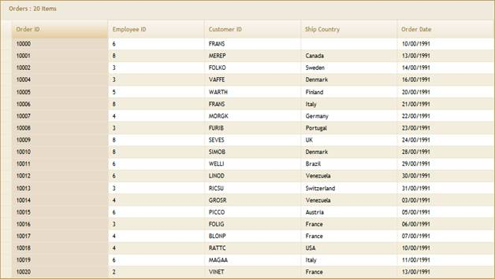
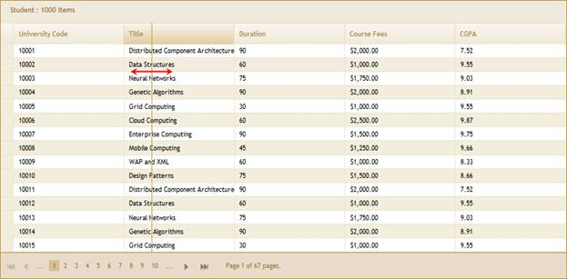
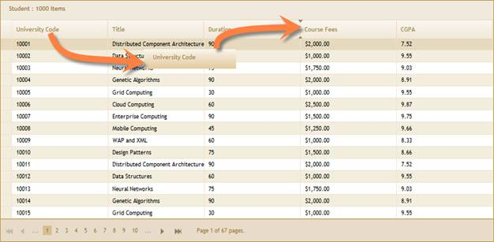

Essential Grid has several client-side interactions to enhance the end-user experience. See Client-Side Events and Methods.
a. Selection
Essential Grid has client-side interaction options to select a single row, a group or rows or the whole grid. For details, see Selection.

Figure 80: Selecting a Column
b. Column resizing
Essential Grid's column widths can be interactively adjusted by dragging and resizing the desired columns.

Figure 81: Column Resizing
c. Drag-and-drop support:
Essential Grid's column positions can be re-arranged by dragging a desired column header to a new location. Cue arrows provide hints about the destination location.

Figure 82: Column Drag-and-Drop